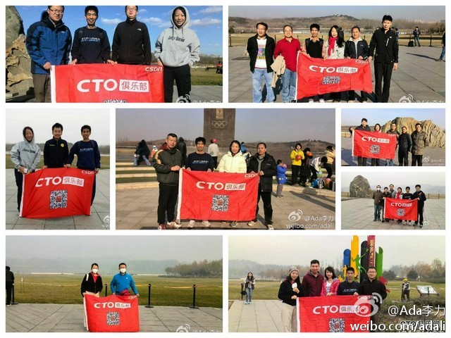
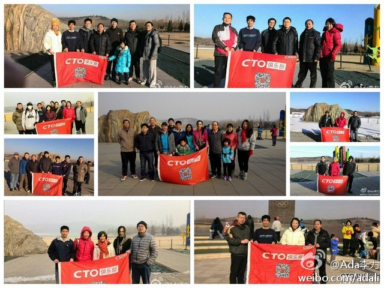

#姣姣#说：“嘉嘉说她的圣诞礼物是圣诞老人送的，可我觉得是她爸爸妈妈买的，圣诞老人怎么会知道她想要什么呢？有那么多孩子，而且，这世界上没有会飞的驯鹿呀。妈妈，你觉得有圣诞老人吗？”。我含糊其辞：“抱有幻想不错。我不也外星人电视剧看得不亦乐乎”。- 实在不知道怎么回答她这个问题。
2014年有一系类的CTO俱乐部走进企业活动。[呵呵]@CTO俱乐部:3月12日@CTO俱乐部 将在北京举办第128期主题活动，组织俱乐部会员“CTO俱乐部走进当当网”，通过实地参观交流，零距离接触感受@当当网 的企业环境、人文环境，与众多其它俱乐部会员结识交流。欢迎俱乐部会员免费报名参加。活动详情查看网页链接 @当当网李国庆 @当当网傅强 @Ada李力
俱乐部会员们偏爱小范围和近距离交流，2014年会有很多的主题晚宴。[呵呵]@CTO俱乐部:近期互联网金融话题炒的火热，为了给大家提供深入了解互联网金融的机会，我们将于3月17日在北京举办第10期CTO晚宴。将邀请@Joyce_在路上 （宜信副总裁）、@罗明雄 （《互联网金融》作者）、@颜阳-老兔空间 （民生证券技术总监）与俱乐部会员聊聊互联网金融，活动详情网页链接 @Ada李力
周日的@CTO俱乐部 健步走活动形式要固定下来了，欢迎会员参合。- 为什么选健步走这个形式？游泳麻烦，爬山太累，跑步伤膝，高尔夫太贵。快走这种运动形式，相对而言，简单易行，容易坚持。另外，走路过程中，还可以和同行聊聊天，不亚于开个座谈会。更多问答见 网页链接 